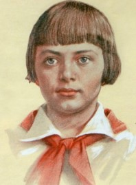

Герои Второй Мировой и Великой Отечественной войны
Возкновение звания Героя Советского Союза
Геро́й Сове́тского Сою́за — высшая степень отличия в СССР, которой удостаивали за совершение подвига или выдающиеся заслуги во время боевых действий, а также и в мирное время.
Звание Героя Советского Союза впервые установлено Постановлением ЦИК СССР от 16 апреля 1934 года, дополнительный знак отличия для Героя Советского Союза — медаль «Золотая Звезда» учреждена Указом Президиума Верховного Совета СССР от 1 августа 1939 года. Автор эскиза награды — архитектор Мирон Иванович Мержанов[2].
Последнее вручение звания Героя СССР произошло 24 декабря 1991 года. Начиная с 20 марта 1992 года за заслуги вручается аналогичное звание Героя Российской Федерации.
16 апреля 1934 года постановлением ЦИК СССР было учреждено звание Героя Советского Союза в следующей редакции: «Установить высшую степень отличия — присвоение за личные или коллективные заслуги перед государством, связанные с совершением геройского подвига, звания Героя Советского Союза»[4]. Никакие знаки отличия не предусматривались — выдавалась только грамота от ЦИК СССР. Также отмечалось, что Герои Советского Союза «пользуются правами и преимуществами, установленными для лиц, награждённых двумя орденами Союза ССР»[5].
Орден Ленина одновременно со званием Героя Советского Союза получили все 11 лётчиков, награждённых до введённого 29 июля 1936 года Положения о звании Героя Советского Союза. Начиная с этой редакции гражданам, удостоенным звания, орден Ленина полагался уже обязательно (помимо грамоты).
Указом Президиума Верховного Совета СССР от 1 августа 1939 года введён особый отличительный знак для Героев Советского Союза — медаль «Герой Советского Союза». В отличие от первоначального Положения, теперь предусматривалась возможность многократного награждения «Золотой Звездой». Дважды Герою Советского Союза выдавали вторую медаль «Золотая Звезда» и сооружали бронзовый бюст на его родине с изображением награждённого. Трижды Герою Советского Союза вручали третью медаль «Золотая Звезда», и его бронзовый бюст должен был быть установлен при Дворце Советов в Москве. Выдача орденов Ленина при награждении второй и третьей медалями не предусматривалась. О присвоении звания в четвёртый раз в указе ничего сказано не было, как и о возможном количестве награждений одного человека. Указом от 16 октября 1939 года был утверждён внешний вид медали, которая получила название «Золотая Звезда».
Нумерация медалей для первого, второго и третьего награждения была отдельная. Так как строительство грандиозного Дворца Советов в Москве в связи с войной закончено не было, то бюсты трижды Героев устанавливались в Кремле.
Указом от 6 сентября 1967 года был введён ряд государственных льгот для Героев Советского Союза.
Первыми, кто был удостоен звания Героя Советского Союза, стали 20 апреля 1934 года полярные лётчики Анатолий Ляпидевский (медаль «Золотая Звезда» № 1), Сигизмунд Леваневский (2; медаль «Золотая Звезда» № 4), Василий Молоков (3), Николай Каманин (4; медаль «Золотая Звезда» № 2), Маврикий Слепнёв (5), Михаил Водопьянов (6), Иван Доронин (медаль «Золотая Звезда» № 7) за спасение терпящих бедствие пассажиров и членов экипажа парохода «Челюскин».
28 сентября 1934 года звание Героя Советского Союза (медаль «Золотая Звезда» № 8) было присвоено М. М. Громову за установление мирового рекорда дальности полёта по замкнутой кривой на расстоянии свыше 12 тыс. км.
Первое присвоение звания Героя Советского Союза за воинские подвиги состоялось 31 декабря 1936 года, когда награды удостоились семнадцать командиров Красной армии — участников гражданской войны в Испании[6]. Примечательно, что почти все они, кроме танкистов Д. Д. Погодина, П. М. Армана, С. К. Осадчего (посмертно), Н. А. Селицкого, П. Е. Куприянова, С. М. Быстрова, были лётчиками. Всего за время войны в Испании (1936—1939) звание Героя было присвоено шестидесяти её участникам[7].
За героизм, мужество и отвагу, проявленные при выполнении боевых заданий командования по разгрому японских интервентов в районе озера Хасан, в августе 1938 года звания Героя Советского Союза были удостоены 26 человек.
Менее чем через год состоялось первое награждение введённым знаком отличия — медалью «Золотая Звезда»: её получили 70 человек за подвиги, совершённые ими в мае — сентябре 1939 года в боях на реке Халхин-Гол. Тогда же в стране появились первые дважды Герои Советского Союза.
После советско-финского вооружённого конфликта 1939—1940 гг. число Героев Советского Союза возросло на 412 человек: 154 воина стрелковых войск, 75 авиаторов, 75 танкистов, 64 артиллериста, 19 моряков, 10 воинов инженерных войск, один кавалерист, 13 пограничников и один лётчик Гражданского воздушного флота.
К началу 1941 года имелось 626 награждённых, в их числе — три женщины и пять человек, удостоенных этого звания дважды.
Подавляющее число награждений «Золотой Звездой» Героя Советского Союза было проведено в годы Великой Отечественной войны: 91,2 % от их общего количества. За подвиги, совершённые в годы Великой Отечественной войны, высокого звания удостоены 11 657 человек (3051 человек — посмертно), в том числе дважды — 108 (из них восемь — посмертно). Среди Героев Советского Союза, участников Великой Отечественной войны — 90 женщин (49 — награждены посмертно).
По состоянию на 1 ноября 1946 года звания Героя Советского Союза были удостоены 12 208 человек[8].
Среди Героев Советского Союза — дети и подростки, участники боевых действий:
Лёня Голиков, погиб в 16 лет; удостоен звания Героя Советского Союза 2 апреля 1944 года;
Марат Казей, погиб в 14 лет. Герой Советского Союза (8 мая 1965);
Валя Котик, партизан-разведчик; погиб 16 февраля 1944 года в возрасте 14 лет. Удостоен звания Героя Советского Союза 27 июля 1958 года. Самый молодой Герой Советского Союза.
Зина Портнова, 17-летняя подпольщица, партизанка; казнена после пыток в немецких застенках. Удостоена звания Героя Советского Союза 1 июля 1958 года.

Среди получивших звание Героя Советского Союза за ратные подвиги в годы войны были представители разных народов многонационального Советского Союза. В ходе войны звания Героя Советского Союза удостоены 13 воинов союзных армий, в основном польские и чехословацкие военнослужащие, а также четыре лётчика французского авиаполка «Нормандия — Неман». Первым иностранным Героем Советского Союза стал командир роты 1-го чехословацкого отдельного пехотного батальона надпоручик Отакар Ярош, героически погибший в бою при Соколово (звание Героя присвоено 17.04.1943 года посмертно).